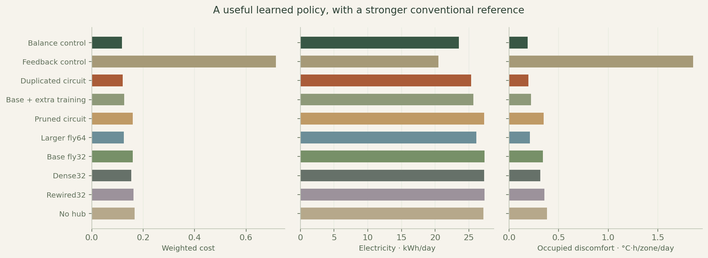
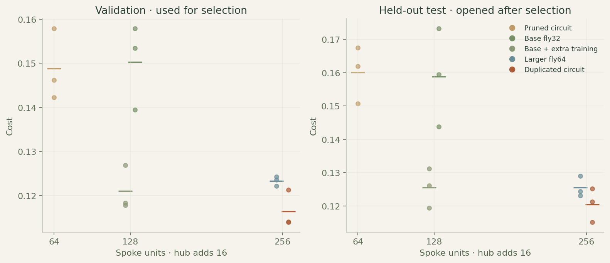
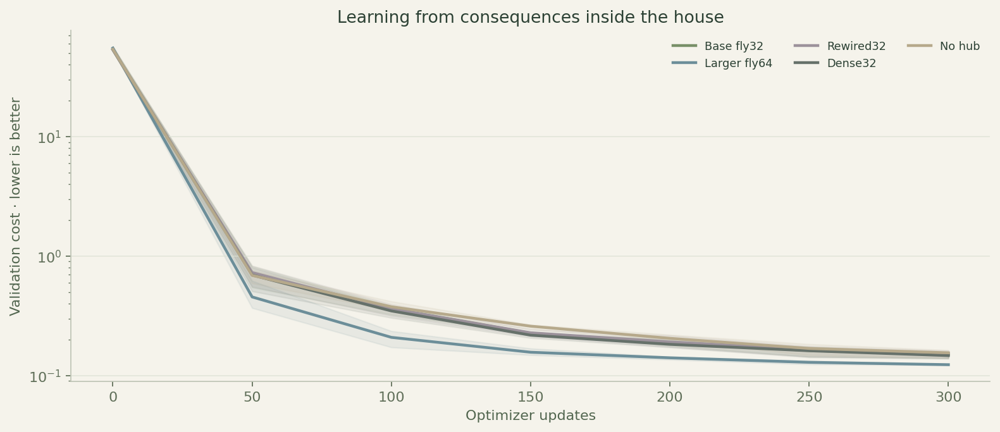
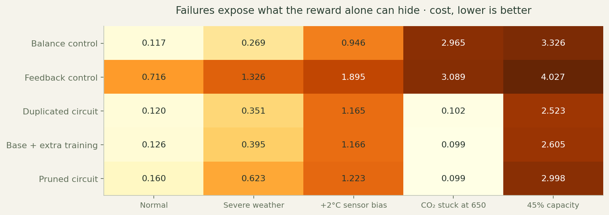

Michael Wong / independent research / 2026
Teaching a circuit to
care for a house.
An experiment in modular brains, home regulation and what actually improves when a circuit grows.
What if a house had a nervous system?
I wanted to see whether a small circuit derived from a fly connectome could learn to look after a house. Temperature, fresh air and lighting are different jobs, but they influence one another. Opening a vent changes the air and the heating load. Sunlight changes the lighting demand and the room temperature. That made a house an interesting way to test a modular brain.
I built a three-room simulator and gave the controller separate thermal, air, light and context circuits. They communicate through a central learned hub. The source wiring comes from actual MaleCNS neuron-pair synapse counts; the sensors, functional modules, hub and actuators are my engineering choices.
The question was not just whether it could learn. I also wanted to know what happened when I cut the circuit down, duplicated it, changed its wiring, or disconnected the hub.
What I built
The simulator includes changing weather, daylight through windows, occupancy, temperature requests, limited heating and cooling, vents and dimmable lights. The controller sees current sensors and its last action. It learns from how its decisions affect the simulated house, using gradients through the physics. It does not see future weather or occupancy.
I trained 24 candidates across three random seeds, then froze selection before running the final tests. The study includes 5,850 optimizer updates and 3.37 million training transitions. I compared the learned circuits against conventional feedback and balance controllers, rewired and dense networks, a smaller circuit, and an equally trained base circuit. The simulator, trained weights, source IDs and full episode results are available with the project.
The result I found useful
Duplication helped, but the gain was modest: 4.1% lower held-out cost than giving the smaller circuit the same extra training. Cutting the circuit in half made performance worse. Removing the hub also hurt control, which shows the trained network was using communication between its modules.
The selected circuit had 256 spoke units, a 16-unit hub and 32 unique source neuron IDs reused across its modules. It kept occupied rooms within one degree of the requested temperature for 92.7% of occupied time across the primary test scenarios.
What did not win
The conventional balance controller still used less energy and met more comfort targets. The learned controller used 7.7% more electricity than that reference. A dense network also outperformed the same-size fly-derived base. Those results do not support a claim that biological wiring is a better way to control a home.
The fault tests were revealing. Both controllers struggled badly when the temperature sensor was biased. A lower aggregate cost could even coincide with worse CO₂ compliance. That made it clear why I needed to report the individual measurements alongside the reward.
What I learned
The interesting part was making the experiment inspectable: following signals through the hub, comparing structural changes against equal training, and being able to trace every copied cell back to its source. A larger circuit earned a small improvement here. That is useful evidence, but it is specific to this simulator and training budget.
This is a simulated control study, not a living brain or a system ready for someone's home. The next experiment would use a more detailed building model, explicit constraints on comfort and ventilation, and stronger fault handling. I would also test whether the weak context circuit can be removed after retraining.
Project by Michael Wong · 2026. Code MIT; MaleCNS-derived data and trained checkpoints CC BY 4.0. Full methods and limitations: reports/report.md.

| Controller | Cost ↓ | kWh/day ↓ | Temperature | CO₂ |
|---|---|---|---|---|
| Balance control | 0.1172 | 23.52 | 95.3% | 100.0% |
| Duplicated circuit | 0.1205 | 25.32 | 92.7% | 91.0% |
| Base + extra training | 0.1256 | 25.65 | 92.2% | 89.1% |
| Pruned circuit | 0.1601 | 27.28 | 91.0% | 82.9% |
| Feedback control | 0.7157 | 20.50 | 79.4% | 99.9% |
Compliance is the mean occupied-time fraction. Targets: ±1°C, CO₂ ≤1,000 ppm. Soft optimization targets; simulated evidence.
Did more circuit help?

Learning and failure modes


Read the full evidence
The full report includes physical equations, reward weights, source provenance, per-seed results, confidence intervals, class lesions, exact checkpoint hashes, independent trajectory readback and limitations.
Code, trained circuits and reproducible study on GitHub ↗
Sources
- MaleCNS v1.0, FlyEM / HHMI Janelia, Cambridge, MRC LMB and Google Research · CC BY 4.0
- Google Research: the male fruit fly connectome
- EnergyPlus zone heat-balance reference
- BOPTEST separate energy and comfort metrics
- Policy Optimization via Differentiable Simulation
Independent reduced-order simulator. Not an official BOPTEST benchmark or a validated EnergyPlus building. Code MIT; derived connectome data and checkpoints CC BY 4.0.